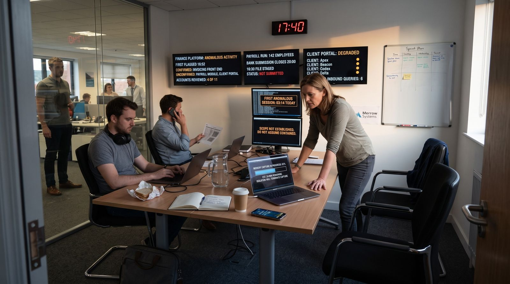

See how a leader thinks before you make the hire.
Think escape room, scored like a situational judgement test. Candidates step into a live workplace situation, spot what matters, connect the clues and make the calls. Then the news changes, and you see what they do with it.
Every candidate works through the same situations, so every candidate ends with the same baseline profile: a like-for-like picture of how they lead, ready to compare across your shortlist.
Early access · Invitation only · No AI marks anyone
Each situation is a short challenge in six stages, built around one workplace in the middle of something: a picture, a brief, and people who don't report to the candidate. Partway through, the picture changes. Every stage is a small challenge of its own, and every one feeds the profile.

1 2 3 4 5Gold pins mark what the candidate noticed. Strings join what they think belongs together; the dashed one is still being joined.
Find what matters in the scene and the brief. Not everything that looks important is.
Link what belongs together, and say in their own words what it tells them.
Five targeted questions on the calls they would make. A call only counts when their own findings back it.
The situation changes. They revisit their calls: what they change, and what they hold.
Choose who to go to, and in what order.
Pick out what would genuinely change their mind, and leave the red herrings.
In a situational judgement test, picking the right option is enough. In Turnstone a decision only counts when the candidate's own findings back it.
4 situations · 6 stages each
about 15 to 20 minutes each
a short practice room first
The four competencies are what a senior hire needs most when they arrive new, without authority. Each is read in two different situations, so no single room decides it. The reasoning tests sit beside them, never blended in.
Sound calls, backed by evidence, when time is short and the picture incomplete.
Getting things done through people who don't report to them.
Earning trust quickly with people who don't know them yet.
Changing what they say, and how, for the audience and the moment.
30 minutes.
30 minutes.
30 minutes.
From the same boards come six lines on how they work, drawn as a radar: from noticing what matters to knowing what would change their mind.
Every candidate sits the same four situations and three reasoning tests, scored by the same rules. What comes out is a baseline profile: a picture of how they lead that you can put next to anyone else's.
The seven readings, a plain-English paragraph on each competency, the six-line radar and the overall reading, with suggested questions drawn from what the candidate did.
Interviews differ from candidate to candidate. The baseline doesn't. Compare two or three candidates side by side, read a whole shortlist in one table, and come back to the same evidence next time you hire.
Evidence beside your interview notes. It helps you show a client or a hiring panel why these candidates are on the shortlist. Sort the table by any reading you like; there is no pass mark, so the decision stays with you.
Judgement under pressure. Made firm calls under time pressure and could point to what they based them on: 8 of 10 were sound and supported by evidence they had found. Revised their advice when new information arrived, rather than defending their first answer.
| Candidate A | Candidate B | Candidate C | |
|---|---|---|---|
| Overall reading | Solid | Strong | Developing |
| Judgement under pressure | 78% | 84% | 55% |
| Influence without authority | 61% | 79% | 48% |
| Credibility with strangers | 70% | 76% | 62% |
| Adaptive communication | 52% | 81% | 44% |
| Reasoning tests, never added in | |||
| Numerical | 72% | 58% | 81% |
| Verbal | 80% | 66% | 74% |
| Logical | 64% | 61% | 77% |
A strong reasoning score doesn't lift a situational reading, and a weak one doesn't sink it. Whoever is hiring reads both, alongside their own interview notes.
Most assessments give a candidate nothing back. Turnstone gives every candidate a profile of their own, written for them, telling the same story the employer reads. That is how candidates are treated well, including the ones who don't get the role.
A short read on how they worked it, while the situation is still fresh.
Their strengths and what to develop, in plain English a civilian employer reads.
Interview phrases and CV lines from what they actually did, and a prompt to turn each strength into a story from their own career.
The questions they may be asked, and the same debrief questions the recruiter will use, so both work from one page.
Judgement under pressure. You revised your advice when new information arrived, rather than defending your first answer.
A phrase is a start; an example is what an interviewer remembers. Think of one time in your career that shows it, and put it in three lines.
Where have you done this in your career? Take one example: what was happening, what did you do, and what changed because of it?
Honest, never flattering, and never contradicting what the employer reads.
How a service leaver gets things done in a civilian workplace, where rank no longer gives the order, is the thing a CV and an interview find hardest to show.
Operational judgement, command decision-making and analytical rigour are compressed into job titles and dates. The substance is lost.
Two officers of identical rank can differ substantially in how they work. Rank does not distinguish them.
Mismatched hires, wasted capability, and capable people passed over because their experience doesn't read across.
A new senior hire from the forces usually has to get things done through people who don't report to them: a founder, investors, a partner, a team they have only just met. Turnstone is built around exactly that. In every situation the candidate arrives new, in a civilian workplace, with no one to give orders to. You can't order; you have to ask.
What they have done, in their own words, often in language a civilian employer can't read.
How they handle numbers, words and logic.
How they present, and what they choose to tell you.
What they actually do with a situation they didn't create, people they don't control, and news that changes the picture.
Some assessment tools now use AI to judge a candidate's answers, so the result rests on a system that cannot fully explain itself or be relied on to give the same answer twice. Turnstone takes AI out of marking altogether.
Scoring is code, run on the server. Identical choices yield an identical result on every run, for every candidate.
A decision earns credit only when the candidate's own board supports it. Picking the right option without the reasoning behind it earns nothing.
Every line of the profile traces back to something the candidate did. Defensible to a hiring panel, or to a candidate who asks why.
Each finished profile carries an overall reading (Strong, Solid, Developing or Limited) built from the four situations alone. The candidates table opens by it, and can be sorted by any competency or test. There is no pass mark and no automatic rejection: the decision stays with you.
Each view is built for the person using it. Every organisation sees only its own candidates.
| Competencies · sound and backed | Reasoning tests · correct | |||||||||||
|---|---|---|---|---|---|---|---|---|---|---|---|---|
| Candidate | Overall reading ▾ | Judgement | Influence | Credibility | Adaptive comms | Numerical | Verbal | Logical | Sent | Jobs | ||
| Priya Shah | Strong | 84% | 79% | 76% | 81% | 58% | 66% | 61% | Sent | COO, defence scale-up | Open | |
| James Okafor | Strong | 80% | 75% | 82% | 72% | 70% | 74% | 68% | Sent | Programme director | Open | |
| Alex Morgan | Solid | 78% | 61% | 70% | 52% | 72% | 80% | 64% | Sent | COO, defence scale-up | Open | |
| Helen Ward | Solid | 66% | 70% | 58% | 64% | 81% | 77% | 85% | Not yet | Programme director | Open | |
| Tom Reilly | Developing | 55% | 48% | 62% | 44% | 81% | 74% | 77% | Sent | COO, defence scale-up | Open | |
| Sarah Kemp | Developing | 50% | 57% | 41% | 46% | 64% | 58% | 70% | Not yet | Programme director | Open | |
Opens by overall reading. Sort by any column, filter by any reading, tick two or three to compare side by side.
Invites candidates, follows their progress, sees every finished profile grouped by its overall reading and by job, reads a plain-English paragraph on each competency, with suggested questions drawn from what the candidate did, and compares two or three side by side. And a debrief guide for the first conversation with the candidate.
Sits the situations and tests and gets a full profile of their own, in language a civilian employer understands, with help preparing to talk it through. It tells the same story the employer reads.
The hiring company. Sees only the candidates shared with them, once each profile is complete, grouped by overall reading and by job, and compares them side by side.
| Platform view | Search firm | Defence prime | Defence startup or VC |
|---|---|---|---|
| Recruiter | Consultant running the search | Internal talent acquisition | Founder or portfolio talent team |
| Candidate | Service leaver or veteran | Service leaver or veteran | Service leaver or veteran |
| Client | The company they are hiring for | Hiring manager or programme lead | Portfolio company |
Placing senior service leavers
Evidence beside your interview notes: how your shortlist actually works, in one report your client can read. It helps you show why these candidates are in front of them.
Internal talent teams
Evidence on senior ex-military hires that stands up to internal scrutiny, beyond the CV and the interview.
Leadership hires
See how a candidate works with people they don't control, before committing to them in a small team where that matters most.
The candidate
A profile of their own, in language a civilian employer reads, about how they get things done, and help preparing to talk it through. Honest, and never a score.
Turnstone is in early access with invited users. We don't claim it can measure actual job performance or predict future capability. It's designed as additional decision support and evidence for employers, alongside interviews and references, never instead of them.
Turnstone is not a first attempt. We build systems that operate inside organisations where an unexplainable output is not acceptable, and we design for scrutiny from the outset.
UK Fire & Rescue Services
In use by UK Fire and Rescue Services. Built to the same principle as Turnstone: structured, explainable output that a public body can stand behind.
We work with organisations that operate under audit, procurement scrutiny and public accountability, and we build to those constraints rather than around them.
Every product we ship separates what a machine can help with from the decisions a machine should not make on its own. In Turnstone, that means no machine judges a candidate.
The clearest way to judge Turnstone is to sit it yourself. We can set up a demonstration login for the practice room and a situation, and walk you through example reports.
Ask for a demoOr email adam@generativeaisolutions.com
Sign in with the email your invitation came to. If you are testing Turnstone for us, the testers' guide explains each step.